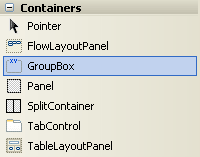
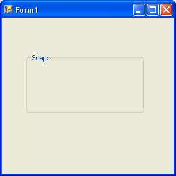
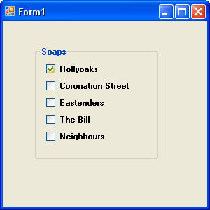

Check Boxes in VB .NET
Two more useful controls in the Visual Basic toolbox are the Check box and the Option Button. You use these when you want to give your users a choice of options. We'll add both of these to a new Form, and then combine them with a Select Case statement to read what the user has chosen.
Check Boxes
So start a new project. Locate the Checkbox control in the toolbox. Double click the control and a Checkbox appears on your new Form
You'll see that the Checkbox has the Text property of CheckBox1 by default, and a Name of CheckBox1. If you were to double click again on the Checkbox icon in the toolbox, the new control would be called CheckBox2.
The problem with this approach is that by double clicking each Checkbox, you have several individual Checkboxes. And if you wanted to move them around you'd have to move each Checkbox separately. There is a way to group all your Check Boxes together, and move them around as one - by using a Group Box. (You can use a Panel control as well, but we'll stick with the Group Box.)
So, click on your Checkbox with the right mouse button. From the menu that pops up, select delete to get rid of it.
Now locate the Group Box control in the toolbox:

It's better to draw this one on the form, rather than dragging and dropping. When you've added one, the only thing you should have on your Form is a Group Box.
We're not going to be using many of the Properties in the Group Box Property box. But click on your Group Box to select it, and change to the Text Property to "Soaps". Change the Font Property to anything you like. You should now have a Form like this one

The Group Box we just added will hold our Checkboxes. It acts as a container for the controls. To move the Checkboxes about, we can just click on the Group Box to select it, and drag and drop the Group Box somewhere else. The Checkboxes will all move with the Group Box. Let's add some Checkboxes to it.
You CAN'T double click a checkbox and add it to a Group Box. The only way to add a control to a Group Box is to draw one on the Group Box.
- Click once with your left mouse button on the Checkbox icon in the VB toolbox
- Move your mouse pointer over to the inside of the Group Box. The mouse pointer will change to a cross
- Hold down you left mouse button inside the Group Box. Keep the button held down, and drag outwards. Release the left button when you're happy with the size. You can always resize it later.
- Add 5 Checkboxes to your Group Box
- Change the Text property of each of your Checkboxes to any five Soap Operas. Your Form should now look something like the one below:

Run your programme to test it out. Click inside a Checkbox to select an item. Click again to deselect it. When you've finished, return to the Design Environment and click on the Group Box itself to select it. Make sure the Group Box IS selected, and not one of your Checkboxes. You can now drag the Group Box around your Form and all the Checkboxes will move with it.
The point about having Checkboxes is to offer your users multiple choices. We'll now write some code to get the choices made by the user. All the Checkboxes with ticks inside them will have their Text displayed in a Message Box.
We'll do that in the next part of this tutorial.